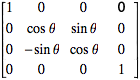
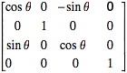

CSS3 → canvas → WebGL
深入了解HTML5提供的图形绘制接口
Created by RED@jasonChen
营销活动
营销活动 === 动画 + 视觉特效
涉及哪些技术
CSS3动画 SVG动画 canvas动画
WebGL动画 webAudio音频 各种多媒体...
特点和优缺点
| 方案 | 优势 | 缺点 | 性能 |
|---|---|---|---|
| CSS3 | 简单、支持广 | 渲染能力弱，局限大 | 费劲 |
| SVG | 矢量、线条 | 兼容性一般 | 性能一般 |
| canvas | 点线面全能 | 依赖GPU | 性能较好 |
| webgl | 十项全能 | 重度依赖GPU | 非常好 |
| webAudio | 音频处理能力 | 依赖浏览器 |
CSS3 transform
给CSS带来本质变化的功能
常见的CSS3动画
CSS3 带来的三维
浏览器底层是怎么实现CSS3的transform功能的？
莫急，我们先来看看canvas
canvas 2d
2d的绘图环境、形状、文字、位图
你可能不知道的canvas 2d
配合4*4矩阵可以完成三维图形绘制
讲回之前的transform问题
浏览器在底层是怎么实现transform的呢？
transform是怎么实现位移、旋转、缩放效果的呢？
矩阵 Matrix
矩阵是个啥？
线性代数、方程组
几何意义：防射变换的处理器
| x` | | m00 m01 m02 m03 | | x |
| y` | = | m10 m11 m12 m13 | * | y |
| z` | | m20 m21 m22 m23 | | z |
| w` | | m30 m31 m32 m33 | | w |
x` = m00*x + m01*y + m02*z + m03*w
y` = m10*x + m11*y + m12*z + m13*w
z` = m20*x + m21*y + m22*z + m23*w
w` = m30*x + m31*y + m32*z + m33*w
单位矩阵
3*3矩阵可以描述2d空间内的坐标变换
定理
|1 0 0|
|0 1 0|
|0 0 1|
乘以待变化的坐标(x,y) =>
|x`| |1 0 0| |x|
|y`| = |0 1 0| * |y|
|1 | |0 0 1| |1|
x` = 1*x + 0*y + 0*1 = x
y` = 0*x + 1*y + 0*1 = y
1 = 0*x + 0*y + 1*1 = 1
我们无意中用到过的矩阵
1、缩放：transform: scale(1.5,0.5)
|a c| |x|
|b d| * |y|
x` = a*x + c*y
y` = b*x + d*y
c = b = 0
所以可得 =>
|1.5 0 | |x|
| 0 0.5| * |y|
x` = 1.5 * x
y` = 0.5 * y
2、旋转：rotate(βdeg)

r = √(x^2+y^2)
x` = cos(β+α) * r
y` = sin(β+α) * r
sin(β+α) = sin(β)cos(α) + cos(β)sin(α)
cos(β+α) = cos(β)cos(α) - sin(β)sin(α)
cos(α) = x/r
sin(α) = y/r
x` = (cos(β)x/r - sin(β)y/r) * r = cos(β)x - sin(β)y
y` = (sin(β)x/r + cos(β)y/r) * r = sin(β)x + cos(β)y
所以可得 =>
|cos(β) -sin(β)|
|sin(β) cos(β)|
验证下 =>
|cos(β) -sin(β)| |x|
|sin(β) cos(β)| * |y|
x` = cos(β)x - sin(β)y
y` = sin(β)x + cos(β)y
3、位移：transform: translate(100,50)
x` = x + tx = 1*x + 0*y + tx*1
y` = y + ty = 0*x + 1*y + ty*1
所以可得 =>
|1 0 tx| |x|
|0 1 ty| * |y|
|0 0 1| |1|
x` = 1*x + tx*1
y` = 1*y + ty*1
w` = 1*1
基于欧拉角的三维旋转矩阵
transform: rotateX(10deg) rotateY(10deg)
 * 
有点懵逼了...
what the hell ~~

知道矩阵又能做什么呢？
这么多动画怎么下手
没做过、 性能怎么办、 纠结、
数学要好、 物理要好、
图形算法并不比处理业务逻辑简单啊
开始一个简单的
来个demo压压惊
代码好长、好麻烦～～
懒ai末期？？
你可以用用这个库
轻量、简单、高性能
特点：轻量级、适合移动端
谈谈VR、AR
VR → Web VR → VR 视觉
web端如何实现VR视觉
先上原理：干啥都得先懂原理
上demo
AR
AR是怎么实现的
讲讲原理
demo
web端遇到的麻烦
浏览器对媒体硬件的支持、视频图像内容的实时读取